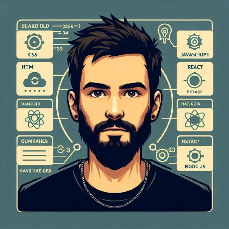

Conheça um pouco mais de minhas habilidades como Dev Front End
Sou um desenvolvedor front-end apaixonado por criar experiências digitais impactantes e funcionais. Aqui você encontrará projetos que destacam minhas habilidades em HTML, CSS e JavaScript, com foco em design responsivo, performance e boas práticas de desenvolvimento. Explore e veja como posso transformar ideias em interfaces incríveis!
Sobre Mim
👨💻 Olá! Sou Abílio Ferraz, um desenvolvedor front-end iniciante, mas totalmente apaixonado por tecnologia e programação. Aos 29 anos, deixei para trás uma formação sólida em Engenharia Civil para mergulhar de cabeça no incrível universo do desenvolvimento de software. Atualmente, estou cursando Engenharia de Software e me especializando em front-end com HTML, CSS e JavaScript.
🚀 Minha jornada não para na faculdade! Estou complementando meus estudos com os cursos e formações da plataforma Alura, onde busco sempre me manter atualizado e explorar novos horizontes no desenvolvimento web.
🎮 Como amante de RPGs e cultura geek, trago um espírito criativo e curioso para os projetos que desenvolvo. Minha inspiração vem do amor e da convivência com minha família e meus filhos, que me motivam a buscar sempre o melhor. Além disso, encontro equilíbrio e inspiração na companhia dos meus cães e gatos, que tornam meu dia a dia mais leve e cheio de alegria, além das viagens de motocicleta, que me conectam a novos caminhos e ideias, seja na estrada ou no código.
✨ Meu objetivo? Criar interfaces impactantes, acessíveis e funcionais, enquanto deixo minha marca como um profissional dedicado e inovador. Vamos construir algo incrível juntos?
Minhas Experiências
Projetista civil, 29 anos, migrando para o desenvolvimento Front-End e cursando Engenharia de Software. Apaixonado por tecnologia, inteligência artificial e design, busco unir criatividade e eficiência para construir experiências digitais incríveis. Com entusiasmo e dedicação, estou em constante aprendizado para entrar na área que amo e contribuir com inovação. Meu objetivo é transformar ideias em soluções que impactem vidas.